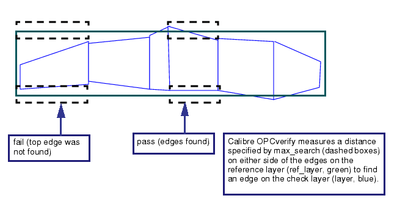
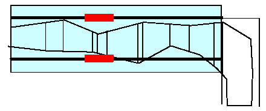
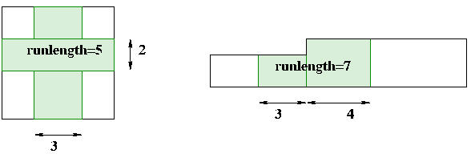

measure_cd
Verification control
Checks accuracy of printed space or width CDs.
Usage
measure_cd layer ref_layer {external | internal}
[[not] {inside | outside} filter_layer]
cd_max cd_max_dist
max_search max_search_distance
tol [not] constraint [ratio | absolute | relative]
[cd_min cd_min_dist]
[cd_min_length min_length]
[separation sep]
[overunder dist]
[output_expanded_edges halfwidth]
[exceptions_only | exceptions_also]
[runlength runlength_constraint]
# error-centric section
[property ‘{’
[min]
[max]
[min_relative]
[max_relative]
[min_ratio]
[max_ratio]
[min_target]
[max_target]
‘}’ [classify, limit, or histogram block]
[add_properties block]
[pinpoint_output block]]
Description
This operation checks the accuracy of printed space or width CDs. The edges on the printimage layer (layer) that qualify must have a pair of appropriately facing parallel edges in the reference layer (ref_layer) that satisfy the following conditions:
must be separated by at least cd_min_dist
must be separated by at most cd_max_dist
must have a mutually projecting edge length is at least min_length
Optionally, meet an additionally specified condition of (not) outside | inside of filter_layer
Qualifying edges (within max_search) will then be checked for distance matching within the user-supplied absolute or percent tolerance. If the tolerance is achieved, a shape will be generated. The output shapes are drawn on the output layer.
The command works for manhattan and 45-degree edges.
The following modes of output are supported:
region of the error (default)
edges bordering the error (output_expanded_edges option)
regions where no CD could be determined (exceptions_only option)
Handling 90-Degree Angle Corners
In the case of two parallel 90-degree corners, measure_cd will normally not check for accuracy (since it requires two parallel edges). To use measure_cd on edges with 90 degree angles, you use the cornerchop function to give the two corners edges that face each other (Figure 1).
You perform the cornerchop function on the reference layer, creating concave and convex corners of the same value, such as in the following command:
cornerchop reflayer .02 .02For misaligned 90-degree angle corners, however, this method may not provide the minimum CD measurement. Use the external function instead.
Concurrency Support
Concurrency is supported for up to 256 measure_cd calls that differ only in one or more of the following arguments:
tol [not] constraint [ratio | absolute | relative]
output_expanded_edges halfwidth
exceptions_only
cdeffective (obsolete)
Arguments
- layer
A required argument that specifies the original or derived polygon layer to check. You normally supply the printimage or aerial contour as this layer.
- ref_layer
A required argument that specifies the reference layer containing original or derived polygons defining the target CD values.
TipWhen possible, use original layers for ref_layer, because derived polygon layers used for input may be missing edges to match to the layer argument.
- external | internal
A required argument specifying that the check is for internal or external edges.
- [not] {inside | outside} filter_layer
An optional argument specifying that only ref_layer edges interacting with filter_layer shapes as given are checked. Otherwise, all edges on ref_layer are checked.
Calibre OPCverify selects check edges identically to the SVRF INSIDE EDGE and OUTSIDE EDGE commands:
inside selects edges that are inside, not coincident to filter_layer shapes
not inside selects edges that are outside or coincident to filter_layer shapes
outside selects edges that are outside, not coincident to filter_layer shapes
not outside selects edges that are inside or coincident to filter_layer shapes
- cd_max cd_max_dist
A required filter for the maximum cd for the pair of ref_layer edges to include in the check.
TipThe critical_dimension setup command can be used in place of this required argument. The cd_max_dist value used for cd_max is 1.5*critical_dimension_value.
- max_search max_search_distance
A required argument specifying the maximum distance to search outside of the space between the two relevant ref_layer edges for layer edges to be checked.
Figure 3. max_search DiagramNote:Setting max_search larger than half of your CD value may result in output shapes being rejected if the search encounters the contour of the next nearest polygon edge.
Values that are too small may miss contours, creating exception-style errors. This is a known source of false positive errors; max_search should be at least greater than your minimum CD value.
Values that are too high may find contours from the next edge beyond the nearest edge, creating false positive errors.
Siemens EDA recommends using a value that is half the CD width for this argument.
TipThe critical_dimension setup command can be used in place of this required argument. The max_search_distance value used for max_search is 0.5*critical_dimension_value.
- tol [not] constraint [ratio | absolute | relative]
A required argument that defines the tolerance. In “ratio” or “relative” (default) modes, the tolerance is a function of the CD on the relevant ref_layer edges. If the constraint is satisfied, an output shape is generated. For “relative” mode, the constraint is relative to the CD in question. In “ratio” mode, the constraint is specified as a ratio of the measured/reference CD in question. For the “absolute” mode, the cd constraint is in user units (default is microns). The default tolerance mode is relative.
To specify a constraint as a ratio, the second value is used as a ratio of the first, using 1.0 as ‘equal’. For example, the constraint “< 1.5” is read as “50 percent greater than.”
Note:The max_search argument is processed before the tol argument; setting a max_search value too small can cause a layer edge to be skipped before it is considered by the tol constraint. Always ensure your max_search value is sufficient to identify areas of interest.
TipSee the section “Constraints” for more information on constraint syntax.
- cd_min cd_min_dist
An optional filter for the minimum cd for the pair of ref_layer edges to include in the check. Default value is 0.
- cd_min_length min_length
An optional filter for the minimum mutually projecting overlap length on two ref_layer edges which are to be included in the check. Default value is cd_max + 1dbu.
- separation sep
An optional argument that specifies the minimum target separation required to measure a CD. Target separation is defined as the distance along the target polygon between the ends of the target CD. Locations with a target separation less than sep in microns are excluded from the measurement. This option allows you to exclude line and space ends from CD measurements without using a separate filter layer. Default is = 0 (no separation).
- overunder dist
An optional argument specifying that within each CD region, if multiple error rectangles are closer than 2*dist from each other, Calibre OPCverify merges them into one rectangle, and fills the space between them. This is done by performing an sizing “overunder” operation on the original error rectangles. The default value is 0.
- output_expanded_edges halfwidth
An optional argument specifying that the output of measure_cd will be thinly expanded edges surrounding the ref_layer CD edges (shown as red bars in Figure 4). This style of output is useful because the sum total length of these edges represents the length of CD which matches the selected constraint. By default, this option is not used. This option is also incompatible with cdeffective.
Figure 4. measure_cd, output_expanded_edges Example- exceptions_only | exceptions_also
exceptions_only and exceptions_also are mutually exclusive options. exceptions_only cannot be specified with output_expanded.
An optional argument that changes the output of measure_cd to be the regions where the image cd cannot be accurately determined (for example, no print) if exceptions_only is specified; exceptions_also outputs both constraint-selected markers and exception markers.
If a property block is also specified, exception markers are set to the following values depending on which property is requested:
-100 for min, min_rel, and min_ratio
100 for max, max_rel, and max_ratio
Note:For runs using exceptions_only and exceptions_also, setting the max_search value less than the measured contour width will result in shapes being output, because measure_cd cannot determine the printing validity without the contour.
- runlength runlength_constraint
An optional argument that if specified, limits the output only to markers that meet the runlength_constraint. A run length is defined as the length of the marker across the CD with the following caveats:
If a marker’s edges along the target are of unequal length (such as for 45 degree CDs) the average of the two marker edge lengths are used as the run length.
If a marker includes multiple CDs (such as a contact that has measure_cd markers in both directions or two markers that touch), the marker lengths will be summed as shown in the following figure.
Figure 5. runlength Argument in measure_cd
- property ‘{’keywords ‘}’
An optional argument that specifies an optional property operation for the returned output of this command. The braces ({}) around the property keyword(s) are required syntax. Multiple keywords can be specified, one per line. The allowed keywords are shown in the following table.
Table 1. measure_cd Property Keywords min
max
min_relative
max_relative
min_ratio
max_ratio
min_target
max_target
The min and max properties return absolute measurements. The other four property names are used for min and max measurements that have relative or ratio values. The min_target and max_target properties correspond to the maximum and minimum CD found within the target polygon.
Note:Using the property option can cause a noticeable runtime impact, especially when there are large amounts of result markers generated through the use of this function. The SVRF DRC CHECK MAP rule file command will not retrieve properties from a layer output by this command; you must add an additional DFM RDB check as detailed in the section ““Creating the SVRF Rule File””.
The following example attaches three different property values (min, max, and max_relative) to each output error shape.
setlayer mcd = measure_cd ... property { min max max_relative }- classify, limit, or histogram block
An optional argument that specifies an error-centric data property collection operation to be performed on the results of the command. For more information, see “Error-Centric Section Blocks”.
- add_properties block
An optional argument that specifies an add_properties block. For more information, see “add_properties Block”.
- pinpoint_output block
An optional argument that specifies how pinpoint markers are drawn for this command. For more information, see “Pinpoint Output Block”.
Examples
In standard mode, the following command measures the CD for a contour:
setlayer mcd1 = measure_cd contour TARGET internal inside ISLAND \
cd_min .09 cd_max .11 cd_min_length .001 max_search .03 \
tol >= .080 < .082 absoluteChaining multiple measure_cd commands together and outputting the results to different layers can be used as a binning tool, as shown in the following figure (each colored band represents a different tolerance range):
Specifying the output_expanded_edges option for the same example code:
setlayer mcd1 = measure_cd contour TARGET internal inside ISLAND \
cd_min .09 cd_max .11 cd_min_length .001 max_search .03 \
tol >= .080 < .082 absolute output_expanded_edges .02results in the output shown in Figure 7:
The following example uses the exceptions_only option to highlight areas of the design where the CD could not be measured:
setlayer mcd1 = measure_cd contour TARGET internal inside ISLAND \
cd_min .09 cd_max .11 cd_min_length .001 max_search .03 \
tol >= .080 < .082 absolute exceptions_only